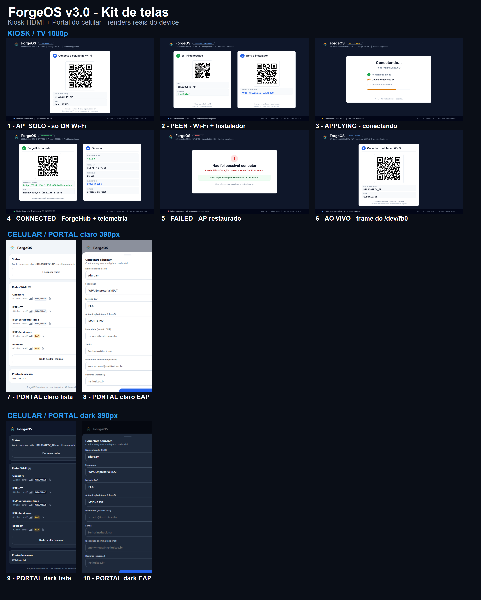
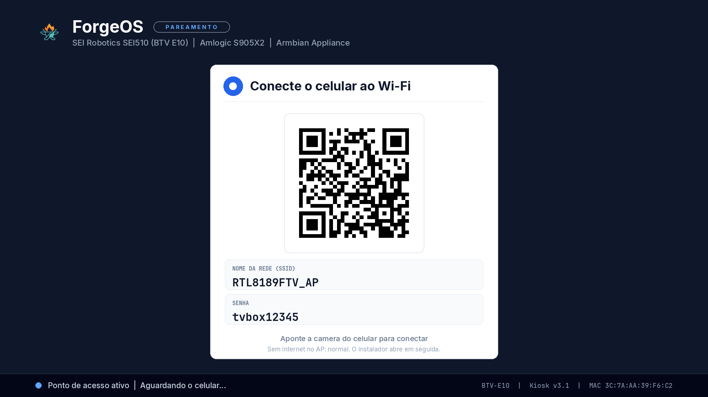
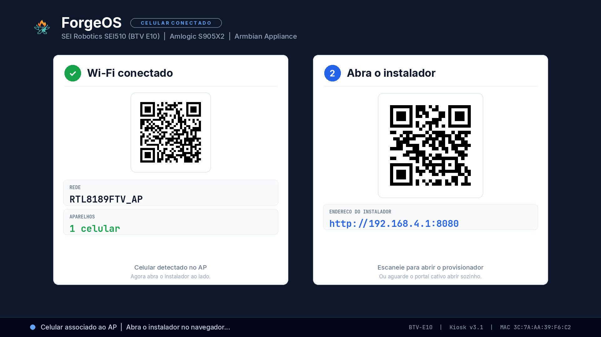
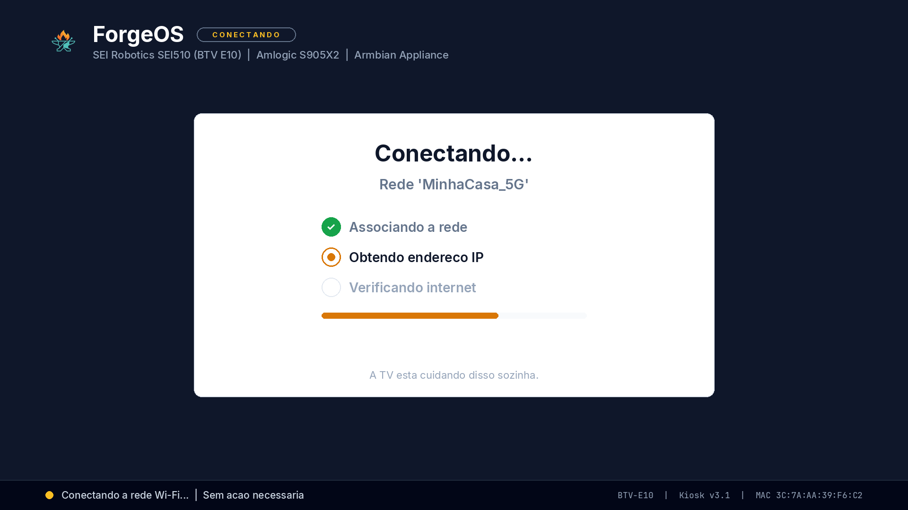
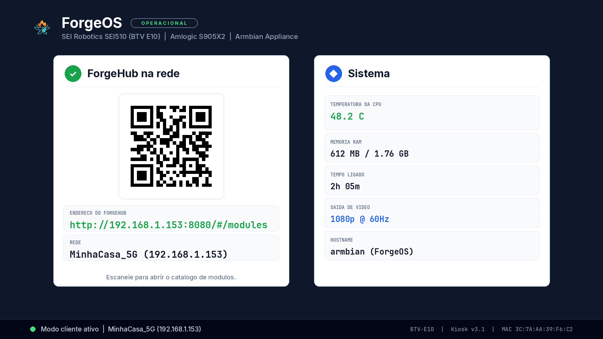
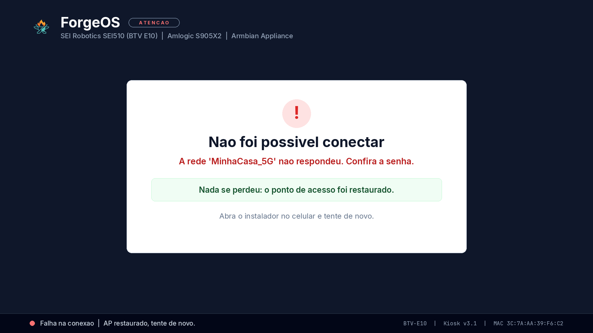
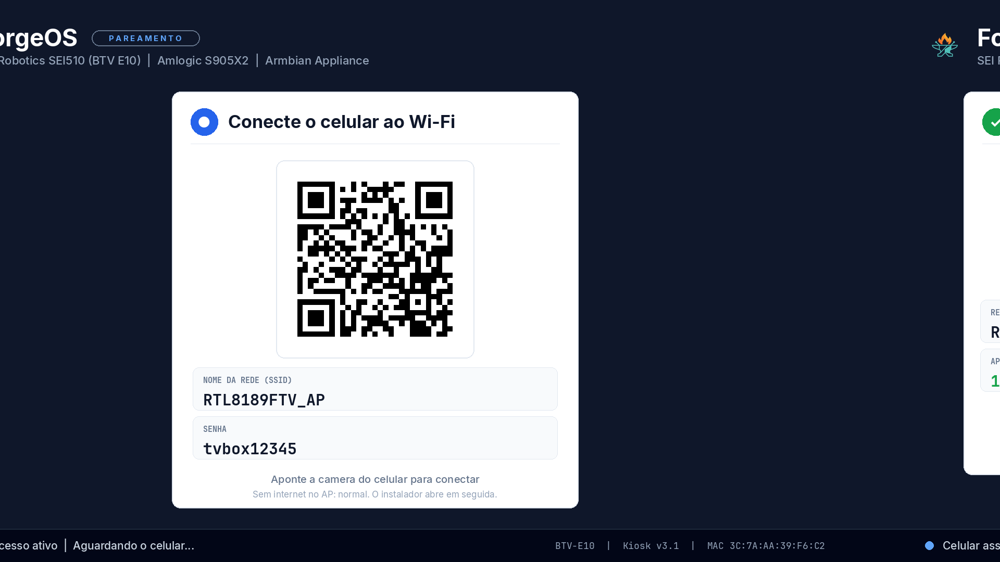
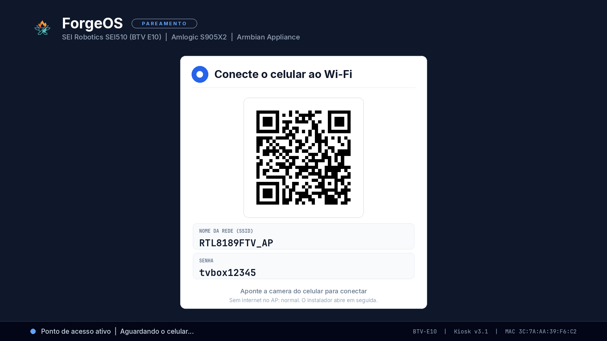
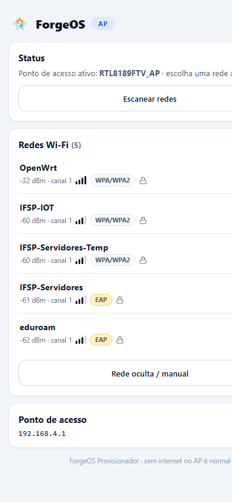
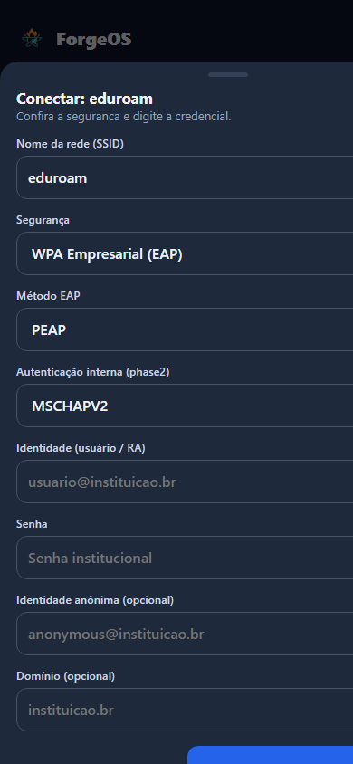

Falha → FAILED (AP restaurado, tenta de novo). Transição com slide ease-out ~0,6 s só ao trocar de estado; re-render 30 s (pixel-shift anti-burn-in); dimming 35% após 5 min parado. Detecção de celular: max(leases dnsmasq, ARP REACHABLE em wlan0) — sem hostapd (o AP é wpa_supplicant mode=2 por causa do RTL8189FTV).






/dev/fb0
| Antes (SPA Cockpit) | Depois | |
|---|---|---|
index.html | 114.541 bytes | 13.063 bytes (8,8× menor) |
| Requisições externas | Google Fonts (morto sem uplink) | zero — 100% offline |
| Escopo | serviços, logs, métricas, palette, sparklines, módulos | scan + conectar + status + restaurar AP |
| Segurança | Open, WPA/WPA2-PSK | Open, WPA/WPA2-PSK + EAP completo (PEAP/TTLS/PWD/TLS, phase2, identidade, anônima, domínio) |


Renders em Chromium 390×844 com /api/status + /api/scan capturados ao vivo (OpenWrt −32 dBm, eduroam EAP). API: 14 endpoints 200, POST /api/provision vazio → 400 (validação sem tocar o rádio), zero ocorrência de password no status.
/api/status serializava o provision.json com senha em claro — qualquer associado ao AP lia o Wi-Fi do dono. Fix: _redact() mascara password/psk/identity/passwd/passphrase; provision.json obsoleto apagado do disco.
Cog rodou mas o DRM falhou: failed to create framebuffer: Invalid argument (Mali-G31 sem KMS neste Armbian). Processo morto, unit revertida ao motor PIL. Navegador no kiosk: descartado.
Removido do ar: Cog, provision.json obsoleto, SPA 114 KB, segredos na API.
Pendente: web/_app/ órfão, logos duplicados (icon.png = forge-icon.png, logo.png 300 KB), clone /opt/multi-forge no device, texto "75 s" do watchdog (código: 300 s).
Backup: /root/forge-backup-20260904/. Novos: display/forge_kiosk.py, unit v3.0, portal mínimo. Smoke test 20 s no fb0 real antes da troca. Rollback do kiosk e do portal via cópias do backup (sem restart no caso do portal).
AP_SOLO → PEER + slide na TV.APPLYING → CONNECTED com IP real.